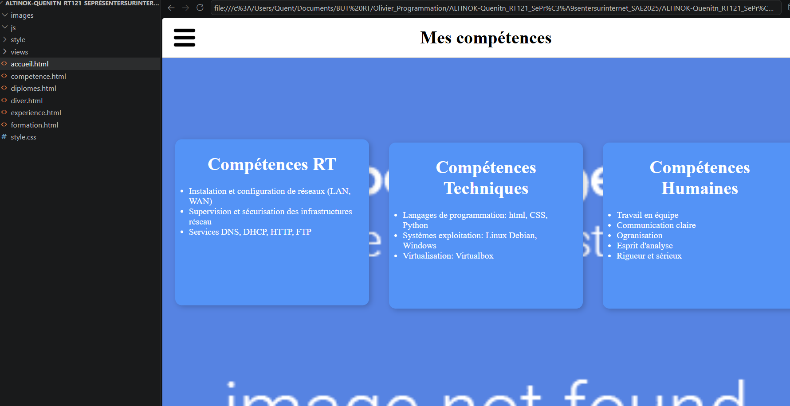

Fiche de suivi du projet
| Nom du projet | SAE 1.04 — Se présenter sur Internet : création d'un site web de CV |
| Compétence visée | Créer des outils et applications informatiques |
| Semestre | Semestre 1 · BUT 1 |
| Durée | 17 Octobre 2025 - 26 Novembre 2025 |
| Technologies utilisées | HTML5 · CSS3 · Flexbox · CSS Grid · Ancres HTML · Liens entre pages · Fichier CSS unique · Éditeur de code · Navigateur web · GitHub |
| Compétences développées |
|
| Plan d'action |
|
Synthèse du projet pour le portfolio
Contexte & objectif
Cette SAE avait pour objectif de créer un site web personnel sous la forme d’un Web-CV. Il fallait concevoir une page principale présentant mon profil, ma formation, mes diplômes, mes compétences et mes informations personnelles. Le site devait aussi contenir plusieurs pages secondaires permettant de détailler certaines parties du CV, avec des liens et des ancres pour faciliter la navigation. L’objectif était de mettre en pratique les bases du HTML5 et du CSS3 afin de produire un site clair, structuré, esthétique et responsive.
Technologies utilisées
Compétences mobilisées
- AC13.01 — Utiliser un système informatique et ses outils
- AC13.02 — Lire, exécuter, corriger et modifier un programme
- AC13.03 — Traduire un algorithme dans un langage de programmation
- AC13.04 — Traduire un algorithme dans un langage de programmation
- Concevoir une interface web moderne et structurée
- Organiser les contenus d'un site web sur plusieurs pages
Déroulement & méthodologie
Le projet a commencé par l'étude du cahier des charges afin d'identifier les différentes informations à présenter. J'ai ensuite conçu la structure du site en créant une page principale ainsi que plusieurs pages complémentaires. Une fois la structure réalisée, j'ai développé les différentes pages en HTML puis j'ai utilisé le CSS pour mettre en forme l'ensemble du site et assurer une présentation homogène. Enfin, j'ai ajouté les liens et les ancres permettant de naviguer facilement entre les différentes sections avant de procéder aux tests et aux corrections nécessaires.
Illustrations

Cette capture montre la page « Mes compétences » de mon Web-CV. Les compétences sont organisées en trois catégories : compétences RT, compétences techniques et compétences humaines. Cette mise en page permet de présenter clairement mes savoir-faire dans des blocs distincts et lisibles.
Retour d'expérience
Ce que j'ai appris
Cette SAE m'a permis de découvrir les bases du développement web et de mieux comprendre la structure d'une page HTML ainsi que l'utilisation des feuilles de style CSS. J'ai appris à concevoir un site composé de plusieurs pages, à utiliser les grilles CSS et les Flexbox pour organiser les contenus et à améliorer la présentation d'une interface web. Ce projet m'a également permis de développer ma rigueur dans l'écriture du code et ma capacité à corriger les erreurs rencontrées.
Ce que je ferais différemment
Avec le recul, je consacrerais davantage de temps à la phase de conception du site avant de commencer le développement. Je réaliserais une maquette plus détaillée afin d'avoir une vision globale de l'organisation des différentes pages et de leur apparence. J'apporterais également davantage de soin à l'aspect visuel et à l'ergonomie du site afin d'offrir une navigation plus agréable et une présentation plus professionnelle.